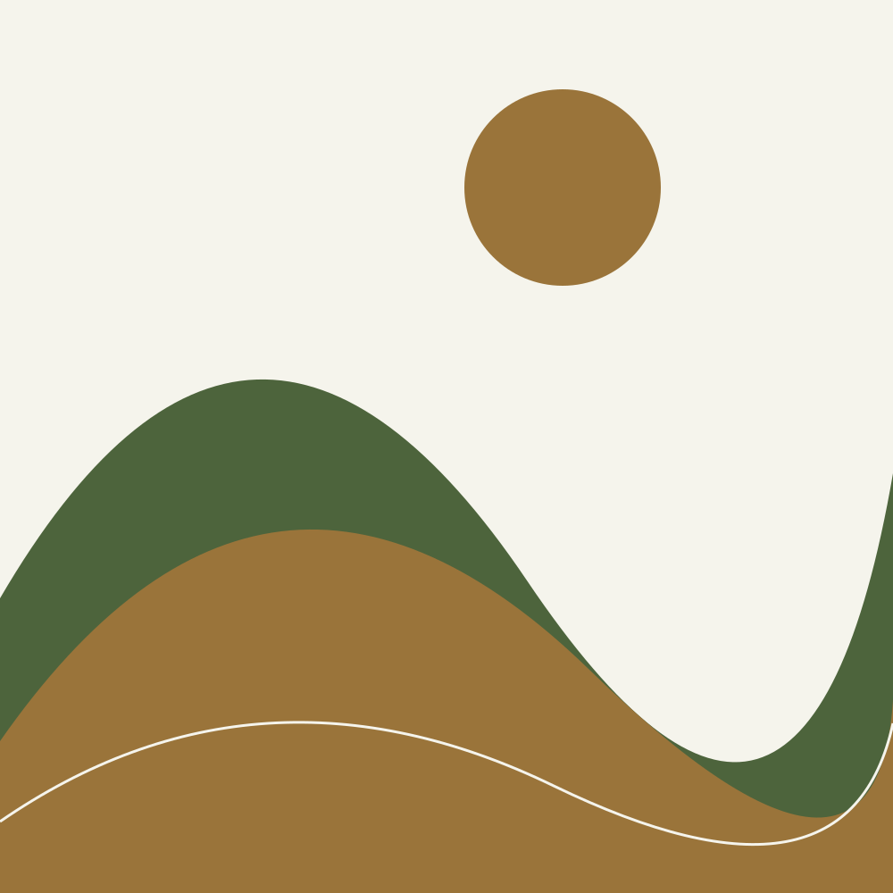

TAIYAKI / IZUMO島根・出雲INDEPENDENT DESIGN PROPOSAL
空ト風ト島根・出雲CAFE & EVERYDAY

A LITTLE DISCOVERY
田んぼのそばの、小さなお店。
公開記事で紹介されている内容から、お店を知る小さな手がかりを。
-
たい焼きの案内
紹介記事では、2026年9月からのたい焼きの提供を案内しています。
-
週末の立ち寄り先に
記事掲載時の営業は土・日。お出かけ前に最新の営業予定をご確認ください。
掲載内容は出典の掲載時点の情報です。現在の提供内容・価格・営業状況を保証するものではありません。
- 所在地
- 島根県出雲市所原町2733
- 営業時間
- 最新の営業日・営業時間は、お店の案内をご確認ください。
- 案内
- お店のInstagram
地図は店名・住所の検索リンクです。正確な入口や臨時休業などは、訪問前にご確認ください。